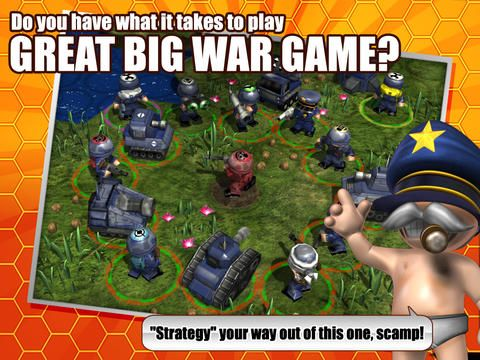

Publishing Info
- Published by: Rubicon Mobile, Ltd.
- Developed by: Rubicon Mobile, Ltd.
- Released: July, 2012
Description
Taking military "advice" from the ridiculous generalissimo, can you battle your way through this truly massive, content-packed military campaign? Plan your missions, deploy your "forces", try not to fall off the sofa laughing! You've plenty of units to play with, covering land, sea and airborne combat. Be warned though, these funny cartoon troops are not exactly "the right stuff". Playing as "Jenkins", the hard done to lieutenant, you will need to complete the Generalissimo's wide variety of mission orders - collect resources, assassinate enemy generals, invade territory, evacuate your forces, do a bit of enemy base ownage, etc.

Game Categories
- Genre: Strategy / Tactics
- Perspective: Diagonal-down
- Visual: Free camera
- Pacing: Turn-based
- Interface: Point and select
Quote
Great Big War Game is a standout among war games on any platform and an enormous iPhone title by any right. Start digging into the massive campaign and you might be missing out on other iPhone games for a long, long while.
-- IGN (https://www.ign.com/articles/2012/07/23/great-big-war-game-review)